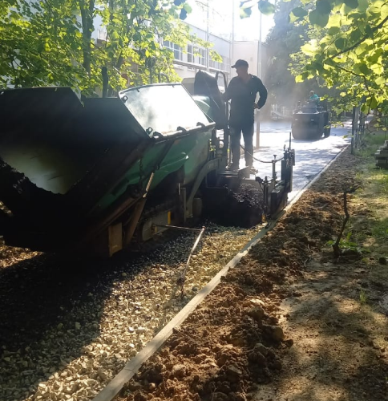
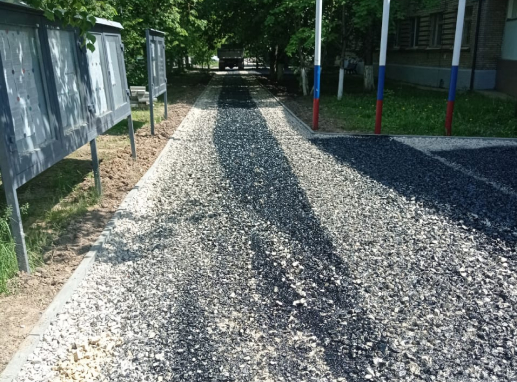
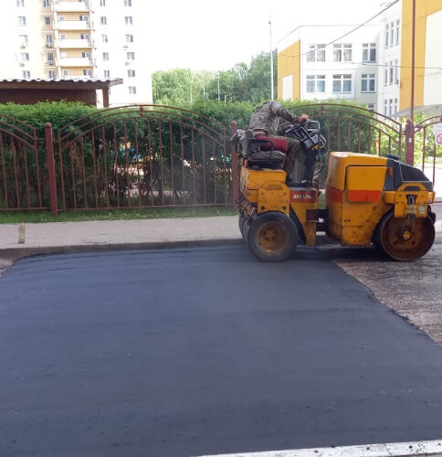

Асфальтирование дорог и асфальтировка территории

Приоритетное направление деятельности компании «Фулл-Строй» - это создание асфальтного покрытия (асфальтирование дорог), капитальный ремонт дорог, благоустройство и комплексное озеленение различных территорий. К преимуществам работы именно с нами можно смело отнести: адекватную стоимость, формируемую на основе выбранных заказчиком материалов, а также исходя из сложности проводимых работ; высочайшее качество и, конечно же, индивидуальных подход к каждому клиенту. Для того чтобы самостоятельно убедиться в этом, достаточно провести поверхностный анализ прайс-листов на услуги нашей компании, сравнив их с теми, что сегодня предлагают иные организации, работающие в данном сегменте рынка. «Фулл-Строй» успешно работает вот уже более 11 лет и смогла завоевать устойчивую репутацию ответственного и надежного партнера, которому «по зубам» даже сверхсложные заказы, за которые не рискуют браться другие. Мы гордимся тем, что являемся настоящими профессионалами с богатейшим опытом. Наша команда состоит из специалистов наивысшего класса, которых со всей ответственностью можно назвать мастерами своего дела. Плюс ко всему, человеческий фактор решает далеко не все, большинство работ могут быть выполненными только при условии наличия строительной техники последнего поколения. Наш автопарк укомплектован машинами, которые можно отыскать далеко не во всех компаниях, занимающихся асфальтированием. Также не лишним будет упомянуть о широчайшем ассортименте асфальтовых смесей, подбираемых в индивидуальном порядке под каждый конкретный тип работ.
Помните, что выбирая компанию-подрядчика, которой вы планируете поручить асфальтирование дорог, обращайте внимание не на умышленно заниженные цены, а на технические характеристики предлагаемых материалов. Те материалы, которые гарантируют долговечность и надежность не могут стоить дешево, и, соответственно, дешевые материалы автоматически приравниваются к низкому качеству и минимальному сроку эксплуатации покрытия.
Тот, кто заинтересован не только в асфальтировке, но и в работах по благоустройству различных территорий, более подробную информацию сможет получить на сайте компании в разделе «Комплексное благоустройство территорий». Мы готовы предложить вам конкурентоспособные цены, а все работы будут выполняться нашими ведущими специалистами в области ландшафтного дизайна, которые всегда пристально следят за новыми тенденциями и выбирают только самые лучшие и актуальные проекты.


Мы неустанно совершенствуемся и, будучи заинтересованными в результате, применяем на практике исключительно новейшие разработки, технологии и сырье, используемое для строительства и проведения ремонтных работ дорожных покрытий. Наша цель - создать качественное покрытие, отвечающее европейским стандартам. Стоимость формируется на базе различных факторов, определяющих долговечность, эксплуатационные характеристики асфальта и т.д. Будучи уверенными в качестве своей работы на все 100%, мы предоставляем 2 года гарантии на все типы покрытий.